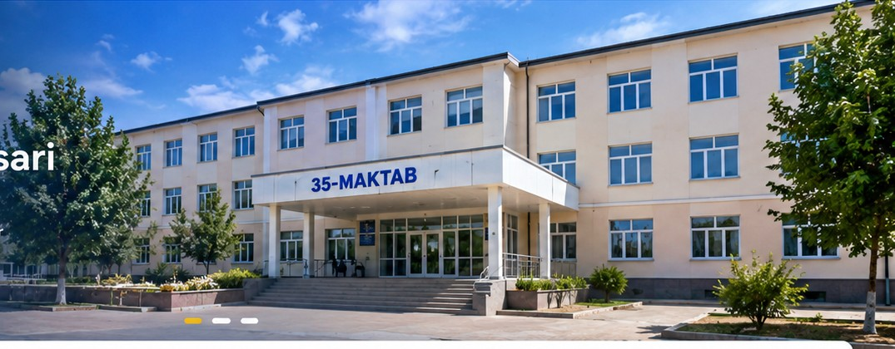
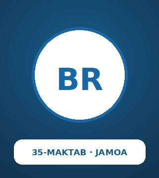
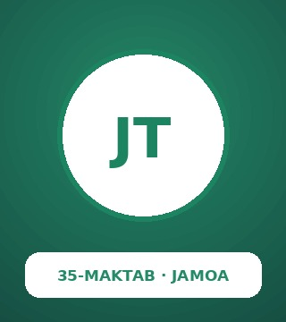
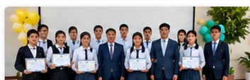
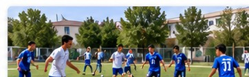

35-Maktab ●
RP9V+9R, Qarshi, Qashqadaryo Region, Uzbekistanda joylashgan umumiy o‘rta ta’lim maktabi.

Maktab haqida
35-maktab — RP9V+9R, Qarshi, Qashqadaryo Region, Uzbekistandagi ta’lim muassasasi. Ushbu sahifa maktab haqida muhim ma’lumotlarni bir joyda jamlash uchun tayyorlandi.
Rasmiy tarix, tashkil topgan yil, rahbariyat, o‘quvchilar soni va ta’lim natijalari maktab ma’muriyati tasdiqlaganidan keyin shu yerda e’lon qilinadi.
Batafsil ma’lumot →Kerakli ma’lumotlar — bir joyda
Bo‘limni tanlang va alohida sahifada batafsil ko‘ring.
Rahbariyat va o‘qituvchilar
Maktab ma’muriyati va mas’ullar. Qabul: Dushanba–Shanba (08:00–13:00).

Botir RahimovDirektor Aziza MahmudovaOBIDO
Aziza MahmudovaOBIDO
Jasur TursunovCHQBT rahbariO‘quv jarayoni
2 smenali dars jadvali: kunlar va vaqt tartibi.
| Kunlar | Smena | Vaqt |
|---|---|---|
| Dushanba–Shanba | 1-smena | 08:00 – 13:00 |
| Dushanba–Shanba | 2-smena | 13:05 – 17:10 |
Yutuqlar
Fan olimpiadalari, sport va iqtidorli o‘quvchilar natijalari.

E’lonlar va yangiliklar
Maktab hayotidagi muhim xabarlar va tadbirlar.
To‘garaklar
Fan, sport va ijodiy mashg‘ulotlar jadvali.
Fotogalereya
Maktab tadbirlari, darslar va hayotidan lavhalar.

Haftalik dars jadvali
Maktabda darslar ikki smenada tashkil etiladi.
Qayerda joylashgan?
RP9V+9R, Qarshi, Qashqadaryo Region, Uzbekistan.
Interaktiv xaritada 35-maktab RP9V+9R, Qarshi bo‘yicha qidiriladi. Joylashuvni borishdan oldin xarita xizmatida tekshirib oling.
Manzil bo‘yicha bog‘lanish →Maktab bilan bog‘lanish
Telefon yoki elektron pochta orqali maktab bilan bog‘lanishingiz mumkin.
MANZILRP9V+9R, Qarshi, Qashqadaryo Region, Uzbekistan
TELEFON+998 91 956 90 84
E-POCHTAfazliddinrahmonov614@gmail.com